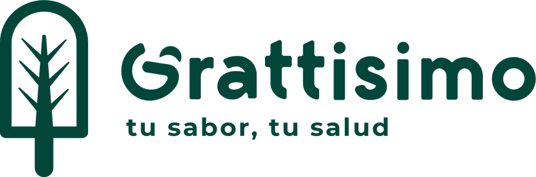
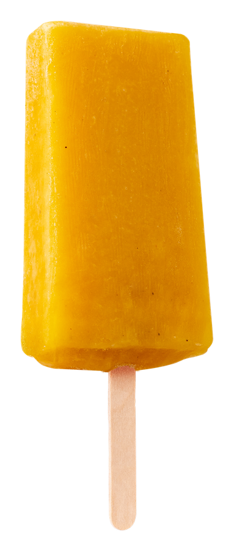
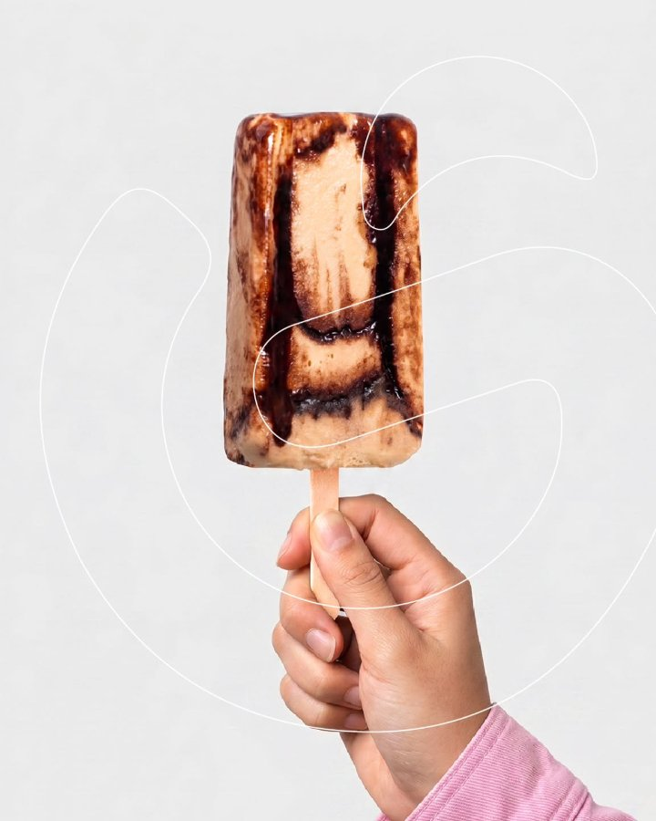

Baja ↓


Helados de fruta 100% natural
Bajos en calorías y azúcares — 100% delicioso, 0% culpa.
En cada bocado — nada de saborizantes que fingen ser fruta.
Bajo en calorías y azúcares. El antojo, sin el remordimiento.
Opciones aptas para diabéticos, con y sin leche, de agua y cremosos.
Dos caras de la misma paleta. Así reinventamos el postre.

tu sabor
Hecho natural
Cremoso e intenso, con ese toque que engancha desde la primera mordida.

¿Por qué Grattisimo?
Sabemos que quieres cuidar tu salud sin perderte las mejores cosas de la vida. Por eso reinventamos el postre: helados a base de fruta natural, bajos en calorías y azúcares. 100% delicioso, 0% culpa.
Nuestro menú
Desde opciones sin azúcar aptas para diabéticos hasta cremosos tipo gelato. ¡Hay un sabor para ti!
Hechos con fruta natural y trozos de fruta en su interior. ¿Con o sin azúcar? ¿Con o sin leche? Tú eliges.
Base cremosa tipo gelato: algunos con trozos de tus ingredientes favoritos, otros marmoleados con fruta natural. Cada sabor es una experiencia.
…y ediciones especiales de temporada — pregunta por la Selección 2026 🍦
Nuestros aliados comerciales
Juntos ponemos el postre perfecto al alcance de tus manos en toda la ciudad.


Encuéntranos
Búscanos dentro de Paiz, Walmart y restaurantes Los Cebollines en toda Ciudad de Guatemala. Toca tu tienda más cercana para pedir en PedidosYa.